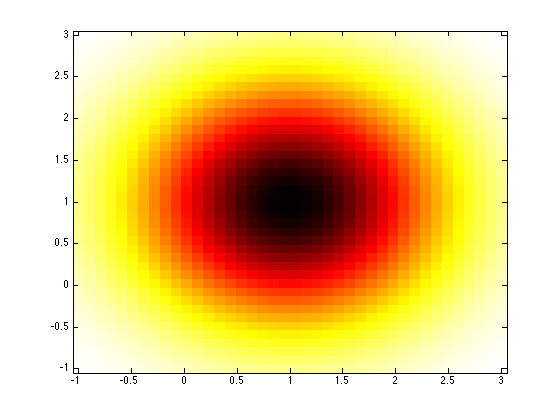

Random variable objects in the Pattern Recognition Toolbox
The Pattern Recognition Toolbox offers a set of random variable objects with a wide range of functionality. prtRv objects can compute pdf or cdf values of a random variable, be used as a random variable generator, or perform a maximum likelihood fit of a random variable from a data set.
Contents
Specifying a random variable object
If you wish to specify the parameters of the random variable, you can do so in the following manner.
% Create a multi-variate normal random variable object rv = prtRvMvn; rv.mu = [1 1]; % Set the mean to be the coordinates [1 1] rv.sigma = [1 0; 0 1]; % Specify the covariance matrix rv.plotPdf; % Plot the pdf randomDraw = rv.draw(1) % Draw one sample from this distribution pdfVal = rv.pdf([1.5 1]) % Evaluate the pdf of this random variable % at the point [1.5 1]
randomDraw =
2.4473 1.4084
pdfVal =
0.1405
 Maximum likelihood estimation of the parameters of a prtRv
If you have a dataset that you would like to fit to a prtRv object, you can use the mle method to find the parameters. For example:
data = randn(1000,2); % Create a zero mean 2 dimensional Normal vector rv = rv.mle(data) % Call the MLE function to estimate the % parameters of this data set
rv =
prtRvMvn
Properties:
name: 'Multi-Variate Normal'
nameAbbreviation: 'RVMVN'
isSupervised: 0
isCrossValidateValid: 1
covarianceStructure: 'full'
mu: [-0.0066 0.0440]
sigma: [2x2 double]
plotOptions: [1x1 prtOptions.prtOptionsRvPlot]
verboseStorage: 1
showProgressBar: 1
isTrained: 0
dataSetSummary: []
dataSet: []
userData: [1x1 struct]
You can fit any data set to any prtRv object. For example, you could fit a uniform random variable to the same set of data in the following manner:
rvUni = prtRvUniform; % Create a uniform random variable object rvUni = rvUni.mle(data) % Call the MLE function
rvUni =
prtRvUniform
Properties:
name: 'Uniform Random Variable'
nameAbbreviation: 'RVUnif'
isSupervised: 0
isCrossValidateValid: 1
upperBounds: [3.1655 2.9978]
lowerBounds: [-3.3042 -4.1145]
plotOptions: [1x1 prtOptions.prtOptionsRvPlot]
verboseStorage: 1
showProgressBar: 1
isTrained: 0
dataSetSummary: []
dataSet: []
userData: [1x1 struct]
Note, now the parameters of rvUni are set, and you can call any of the other prtRv functions, such as plotPdf or draw:
rvUni.plotPdf; % Plot the pdf randomDraw = rvUni.draw(2) % Draw 2 samples
randomDraw =
-3.0211 -1.9934
0.1665 -2.0092

For a list of other functions related to to prtRv objects, see prtRv. All random variable objects in the Pattern Recognition Toolbox have the same API as discussed above. For a list of all the different random variables supported, and links to their individual help entries, A list of commonly used functions